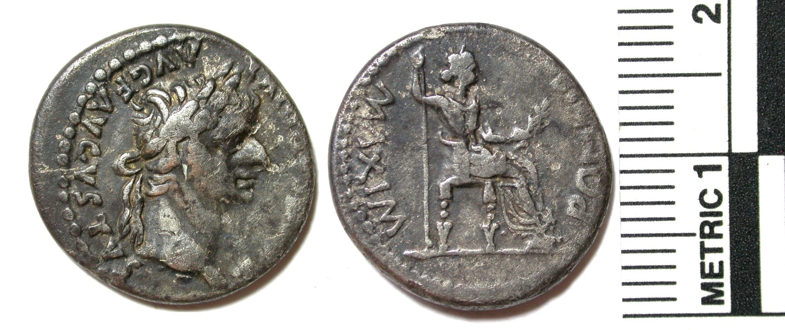

Tiberius Denarius

- Find Name
- Tiberius Denarius
- Description
- A silver denarius of the emperor Tiberius (AD 14-37), minted at Lugdunum. The obverse shows the laureate head of Tiberius right with the inscription 'TI CAESAR DIVI AVG F AVGVSTVS' (Tiberius Caesar, son of the Divine Augustus, Augustus); the reverse shows a seated female figure, usually identified as Livia as Pax, holding a scepter and branch, with the inscription 'PONTIF MAXIM' (RIC I 30). A denarius was about a day's wage for a laborer.
- Historical Period
- Roman Period
- Evidence Class
- Contextual
- Interpretations
- The traditional and still most widely accepted CANDIDATE for the 'tribute penny' (Greek denarion, KJV 'penny') shown to Jesus in Matthew 22:19-21 — but a candidate, not certain. A survey of coin finds from Jerusalem shows few Roman imperial denarii circulated there in Jesus' lifetime, and alternatives have been proposed, including the Antiochan tetradrachm of Tiberius and the denarius of Augustus with Gaius and Lucius on the reverse. The coin itself is genuine; only the identification as THE tribute penny is debated, so it is classed Contextual, not Disputed.
- Alternative Names
- Tribute Penny
- Related Places
- Related Books
- Related People
- Scripture Illuminated
- Biblical Significance
- In Matthew 22 Jesus asks for the tribute coin, points to the emperor's image and inscription, and answers, 'Render therefore unto Caesar the things which are Caesar's.' This denarius carries exactly that image and inscription, making it the classic illustration of the passage.
- Artifact Date
- AD 14-37
- Current Location
- Examples in many museum collections, including the British Museum
- Timeline Era
- Life of Christ
Awaiting Review Not yet checked against scholarly sources. Treat its claims as provisional until this entry is reviewed. About verification
Sources: https://en.wikipedia.org/wiki/Tribute_penny
https://learn.apmex.com/learning-guide/coin-collecting/ancients/what-was-a-tribute-penny/
https://learn.apmex.com/learning-guide/coin-collecting/ancients/what-was-a-tribute-penny/
Last reviewed: not yet reviewed